В предыдущем уроке по созданию дизайна Landing Page для студии мы создали прототип сайта, сегодня приступим к его визуализации, то есть будем рисовать дизайн сайта.
Предыдущие уроки:
- Создание дизайна Landing Page для студии разработки сайтов (Урок 1)
- Создание дизайна Landing Page для студии разработки сайтов (Урок 2)
Для создания дизайна нам понадобится сетка 960 Grid System, немного модифицированная и расширенная для Bootstrap на 1140 пикселей. Это 12-ти колоночная сетка для Adobe Photoshop, так как рисовать дизайн сайта мы будем именно в этой программе: Скачать сетку
Для заголовков будем использовать шрифт семейства Slab – это такой немного топорный, квадратный шрифт с засечками, но при правильном использовании смотрится неплохо. Конкретно, будем использовать Echoes Slab.
Фон первого экрана
Итак, откроем нашу сетку в фотошопе и сразу обозначим первый экран Landing Page – нарисуем прямоугольник шириной в документ и высотой 640 пикс. Зададим ему цвет фона #663399:
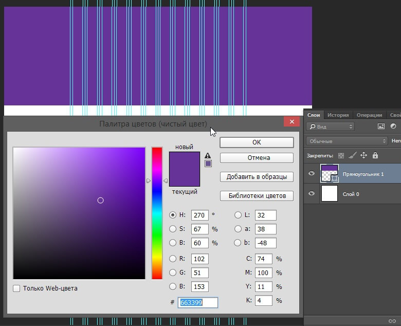Создадим обтравочную копию слоя, который сделаем немного темнее предыдущего, с белой маской.
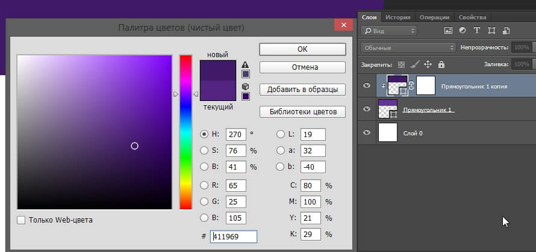Ластиком ровными штрихами удалим некоторые части белой маски, создавая эффект больших осветляющих пятен:
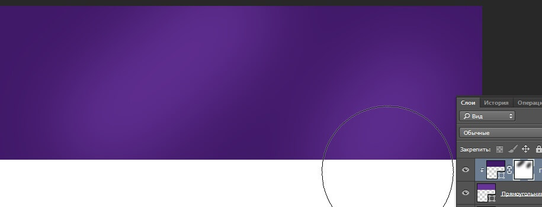Хоть дизайн у нас и флетовый, можно немного таким образом поизгалятся, будет красивее.
Далее нарисуем верхнюю полосу меню – это прямоугольник черного цвета, высотой 60 пикс, непрозрачность слоя – 85%:
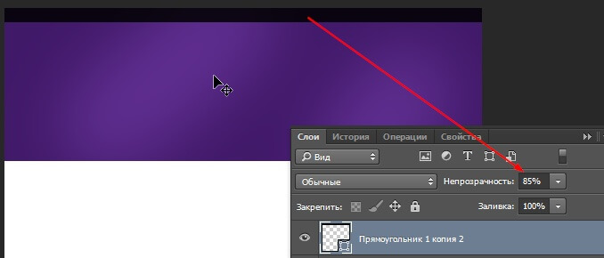Логотип
Напишем шрифтом Echoes Slab логотип – MyStudio, размером 24 пикс, белым цветом. Оставив справа от сетки немного место для графического элемента логотипа.
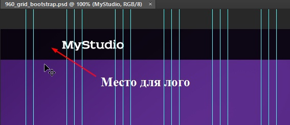Графическим элементом логотипа я придумал бриллиант. Найдем изображение векторного простого бриллианта в гугл картинках, мне понравился этот:
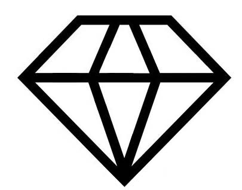Откроем его в Inkscape и векторизируем растр (Объект > Векторизировать растр):
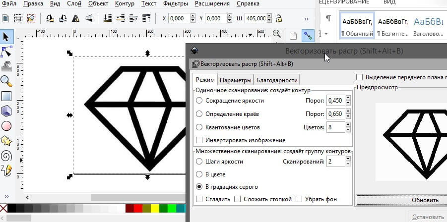У меня получился такой png патч, можете скачать его, минуя работу в Inkscape:
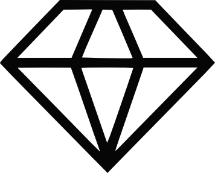Экспортируем наш векторизированный бриллиант в png и вставим в наш макет в фотошопе.
Уменьшим до необходимых размеров и наложим красный цвет - #ff3838:
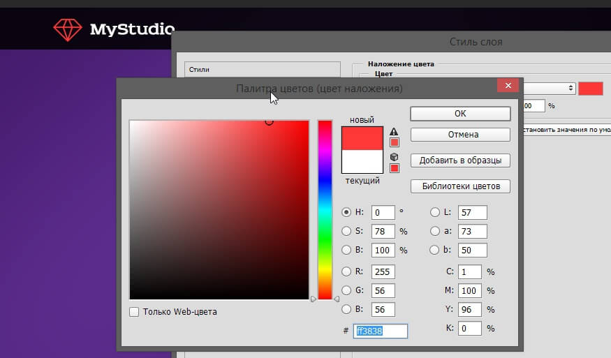Можно бриллианту добавить красного внешнего свечения цветом #ff0000:
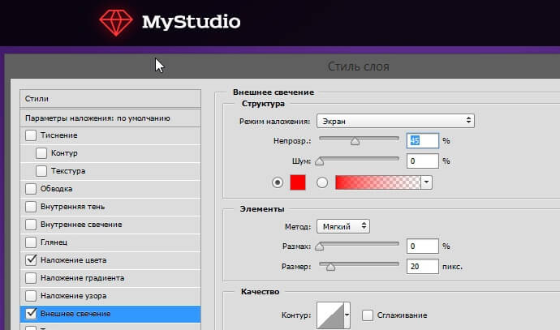Заголовки
Наш несложный логотип готов, напишем заголовки у первого экрана, см. наш прототип из первого урока. Размер заголовка – 50 пикс, размер подзаголовка – 20 пикс. Цвет заголовка - #ffffff, цвет подзаголовка – возьмем пипеткой с фона и осветлим:
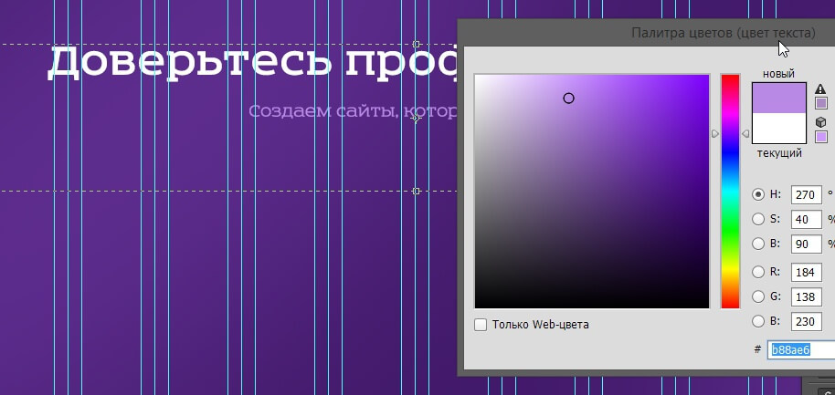Отлично, но мы забыли меню и телефон из прототипа. Их мы напишем шрифтом Exo 2 Light, его также можно взять на сайте Fonts4Web.ru. Цвет – белый, подчеркивание активного пункта и пункта при наведении мышью сделам красным, взяв цвет из логотипа – простоя однопиксельный прямоугольник. Размер меню – 16 пикс. Меню делаем по сетке – 4, 5, 6, 7 ,8 и 9-я колонки:
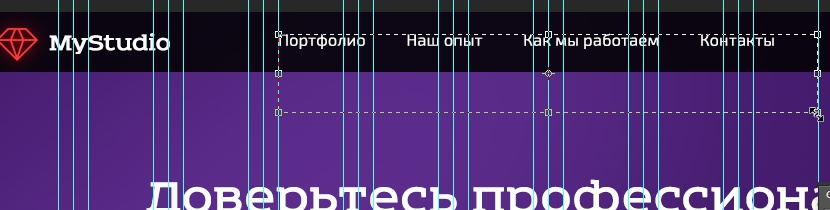И напишем телефон в последних трех колонках сетки, также белым цветом, шрифт Exo 2 Regular, размер 22 пикс. Под телефоном – более мелким шрифтом напишем «Заказать звонок»:
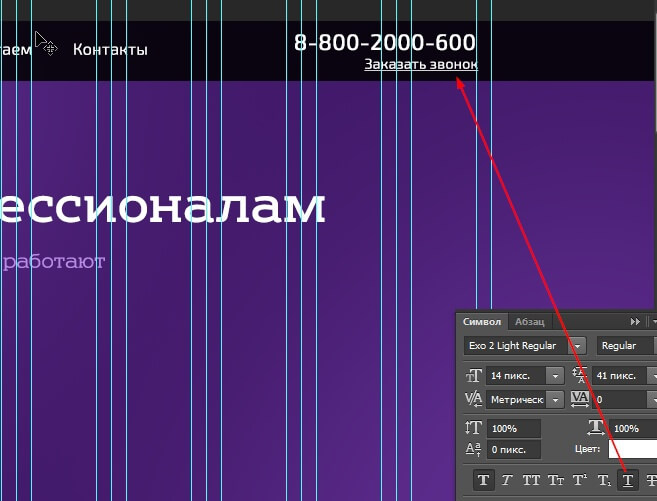Далее по прототипу у нас слайдер с последними работами. Нарисуем по сетке 4 прямоугольника черного цвета с непрозрачностью 25%. Хоть в прототипе мы нарисовали 3, но в данной сетке можно разместить и 4:
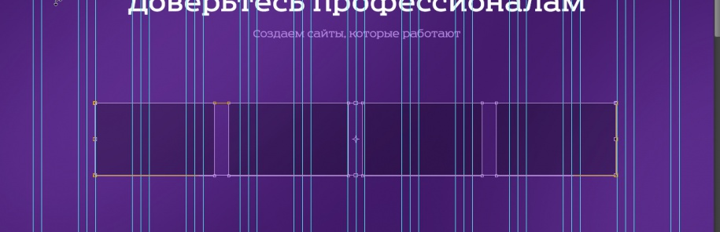Оставим по одной колонке сетки по краям для навигации по слайдеру.
Заполним элементы слайдера логотипами крутых компаний, я выбрал эти для примера:
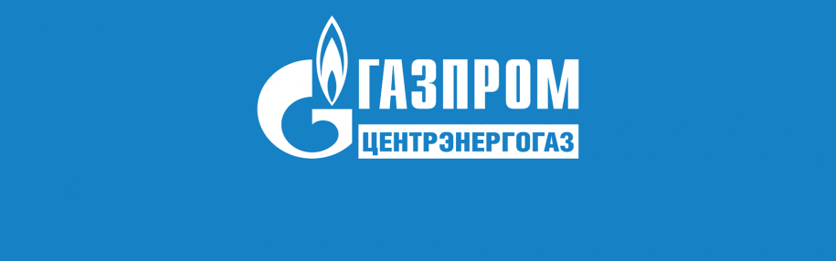 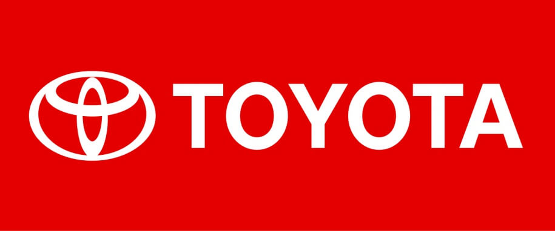Создадим прямоугольники меньшего размера и заполним нашими логотипами, применив обтравочную маску для каждого изображения. Фон каждого прямоугольника зальем цветом, соответствующим цвету на картинке:
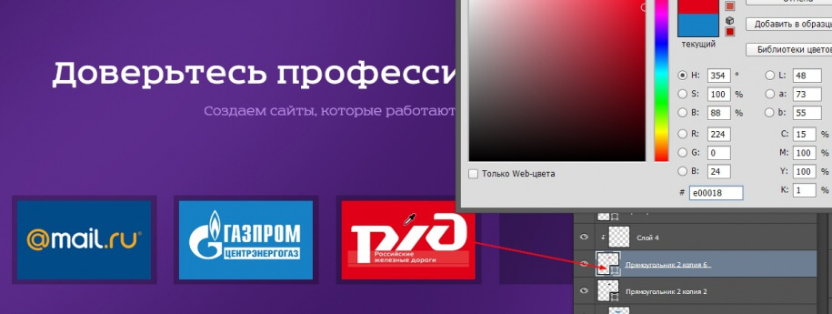Добавим навигацию слайдера. Для этого по крайним колонкам разместим стрелки. Их можно взять, например, из шрифта Ruslan Display. Размер стрелок 60 пикс, непрозрачность 25%.
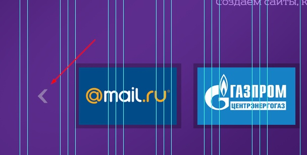В прототипе мы определили, что будем внизу каждой секции размещать стрелку вниз, которая будет свидетельствовать о том, что можно почитать что-нибудь ниже текущего экрана. Давайте создадим такую галочку на фигурном фоне. Нарисуем инструментом «Многоугольник» фигуру c пятью конечностями. Наложим легкий, с едва заметным переходом оранжевый градиент:
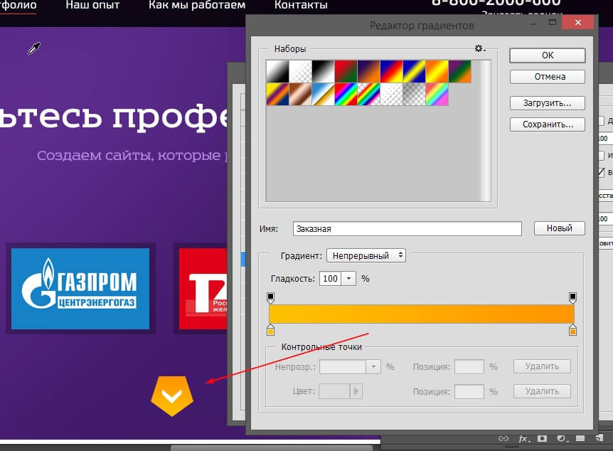Отлично. Можно, конечно еще поработать, сделать что-нибудь интересное, наложить какой-нибудь паттерн на фон шапки, но этого, думаю, будет достаточно.